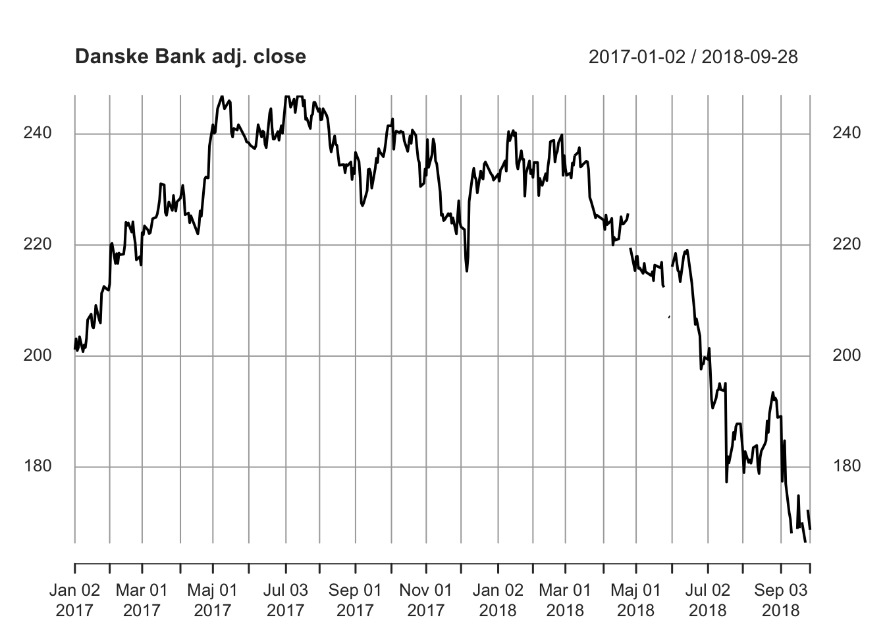
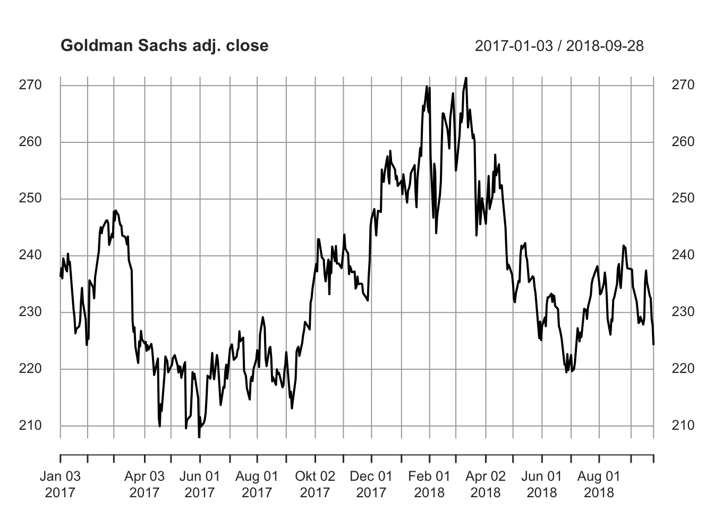
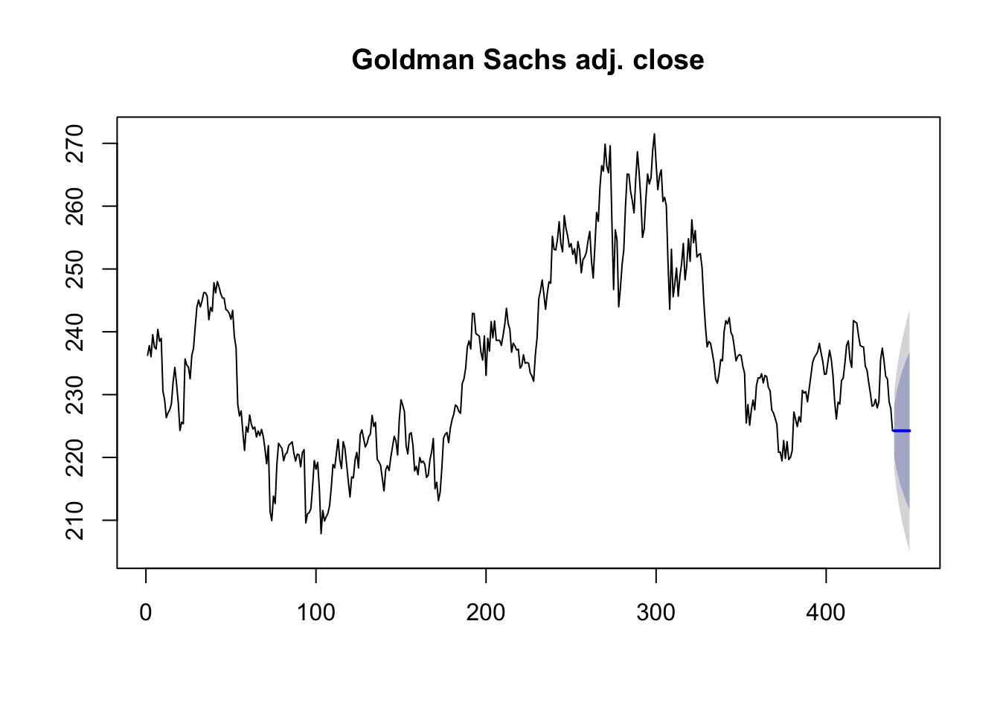

Kapitel 13 Forecast Aktiekurser
Man kan hente online aktiekurser med quantmod pakken installer denne med install.packages og library kommandoerne. Vi henter nedenfor Google lukkekurs til dato.
## [1] "GOOG"
## Series: GOOG[, 6]
## ARIMA(0,1,1)
##
## Coefficients:
## ma1
## 0.0866
## s.e. 0.0500
##
## sigma^2 estimated as 173.9: log likelihood=-1750.76
## AIC=3505.53 AICc=3505.56 BIC=3513.69## Point Forecast Lo 80 Hi 80 Lo 95 Hi 95
## 440 1193.259 1176.357 1210.161 1167.409 1219.109
## 441 1193.259 1168.299 1218.220 1155.085 1231.433
## 442 1193.259 1162.269 1224.249 1145.865 1240.654
## 443 1193.259 1157.236 1229.283 1138.166 1248.352
## 444 1193.259 1152.824 1233.695 1131.418 1255.100
## 445 1193.259 1148.848 1237.670 1125.338 1261.180
## 446 1193.259 1145.200 1241.318 1119.759 1266.759
## 447 1193.259 1141.810 1244.708 1114.574 1271.944
## 448 1193.259 1138.630 1247.888 1109.711 1276.807
## 449 1193.259 1135.625 1250.893 1105.115 1281.403require("quantmod")
getSymbols("GS",from = "2017-01-01", to = Sys.Date(),getSymbols.warning4.0=FALSE)## [1] "GS"
## Series: GS[, 6]
## ARIMA(0,1,0)
##
## sigma^2 estimated as 9.631: log likelihood=-1117.52
## AIC=2237.03 AICc=2237.04 BIC=2241.11## Point Forecast Lo 80 Hi 80 Lo 95 Hi 95
## 440 224.24 220.2629 228.2171 218.1576 230.3224
## 441 224.24 218.6156 229.8644 215.6382 232.8418
## 442 224.24 217.3515 231.1285 213.7050 234.7750
## 443 224.24 216.2859 232.1941 212.0752 236.4048
## 444 224.24 215.3470 233.1330 210.6393 237.8407
## 445 224.24 214.4982 233.9818 209.3412 239.1388
## 446 224.24 213.7177 234.7623 208.1475 240.3325
## 447 224.24 212.9911 235.4889 207.0364 241.4437
## 448 224.24 212.3088 236.1712 205.9928 242.4872
## 449 224.24 211.6634 236.8166 205.0057 243.4743
require("quantmod")
getSymbols("DANSKE.CO",from = "2017-01-01", to = Sys.Date(),getSymbols.warning4.0=FALSE)## [1] "DANSKE.CO"## Series: DANSKE.CO[, 6]
## ARIMA(0,2,2)
##
## Coefficients:
## ma1 ma2
## -1.0884 0.0981
## s.e. 0.0506 0.0504
##
## sigma^2 estimated as 6.796: log likelihood=-1021.57
## AIC=2049.14 AICc=2049.19 BIC=2061.36## Point Forecast Lo 80 Hi 80 Lo 95 Hi 95
## 437 168.6178 165.2767 171.9589 163.5081 173.7276
## 438 168.2508 163.7299 172.7717 161.3367 175.1649
## 439 167.8838 162.4146 173.3529 159.5194 176.2481
## 440 167.5167 161.2251 173.8084 157.8945 177.1390
## 441 167.1497 160.1169 174.1825 156.3939 177.9055
## 442 166.7827 159.0664 174.4989 154.9817 178.5837
## 443 166.4156 158.0594 174.7719 153.6359 179.1954
## 444 166.0486 157.0864 175.0108 152.3421 179.7552
## 445 165.6816 156.1408 175.2224 151.0902 180.2730
## 446 165.3146 155.2178 175.4113 149.8729 180.7562